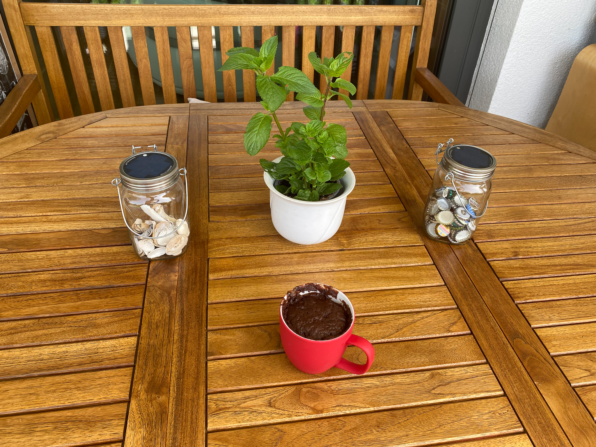
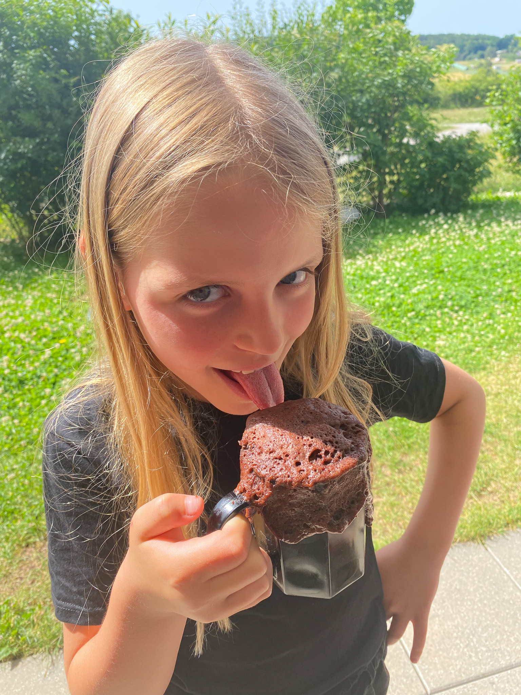

Rezepte
Bonbons
Zutaten
- 150g Zucker
- 50ml Wasser
- 40ml Sirup (z.B. Erdbeer/Waldbeer oder andere Zutaten)
Beschreibung
Alle Zutaten in einen Topf mischen. Alles bei gleichmäßigem Rühren aufkochen lassen und reduzieren, bis es zähflüssig wird.Auf einem Backblech mit Backpapier ausschütten. Abkühlen lassen, bis die Bonbonmasse modellierfähig ist. Die Masse zu einer Rolle formen und in kleine Stücke schneiden. Danach weiter abkühlen und aushärten lassen.
Schoko Tassenkuchen
Der Tassenkuchen ist ein beliebter Frühstückssnack bei den Kids.
Zutaten
- 3 EL Mehl
- 1.5 EL Zucker
- 1 EL Kakao
- 0.5 EL Backpulver
- 1.5 EL Sonnenblumenöl
- 5 EL Milch
Beschreibung
Die Zutaten werden in einer Tasche zusammen gerührt. Dabei ist auf eine gute Durchmischung zu achten. Am besten vor dem Mehl die Milch in das Glas geben und alles gute Durchmengen. Danach für drei Minuten bei zirka 600 Watt in der Mikrowelle erhitzen.Guten Appetit!
